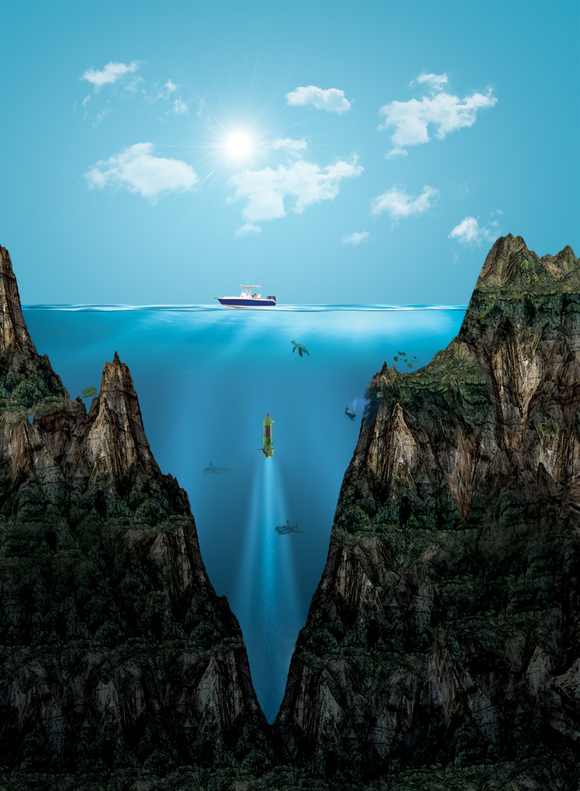

Мариа́нский жёлоб (или Мариа́нская впа́дина) — океанический глубоководный жёлоб на западе Тихого океана, самый глубокий из известных на Земле. Назван по находящимся рядом Марианским островам. Впадина имеет форму полумесяца и имеет длину около 2550 км и ширину 69 км. На дне траншеи верхний столб воды оказывает давление 1086 бар, что более чем в 1071 раз превышает стандартное атмосферное давление на уровне моря. При таком давлении плотность воды увеличивается на 4,96 %. Температура внизу составляет от 1 до 4 °C. Самая глубокая точка Марианской впадины — «Бездна Челленджера» (англ. Challenger Deep). Она находится в юго-западной части впадины, в 340 км на юго-запад от острова Гуам (координаты точки: 11°22,40′ с. ш. 142°35,50′ в. д.HGЯO). По замерам 2011 года, её глубина составляет 10 994 м ниже уровня моря; по замерам 2020 года, её глубина составила 10 028 м. В 2009 году Марианская впадина была признана национальным памятником США. Исследователями Института океанографии Скриппса на глубине 10,6 км в Марианской впадине была обнаружена моноталамея. Данные также предполагают, что во впадине обитают микробные формы жизни. 